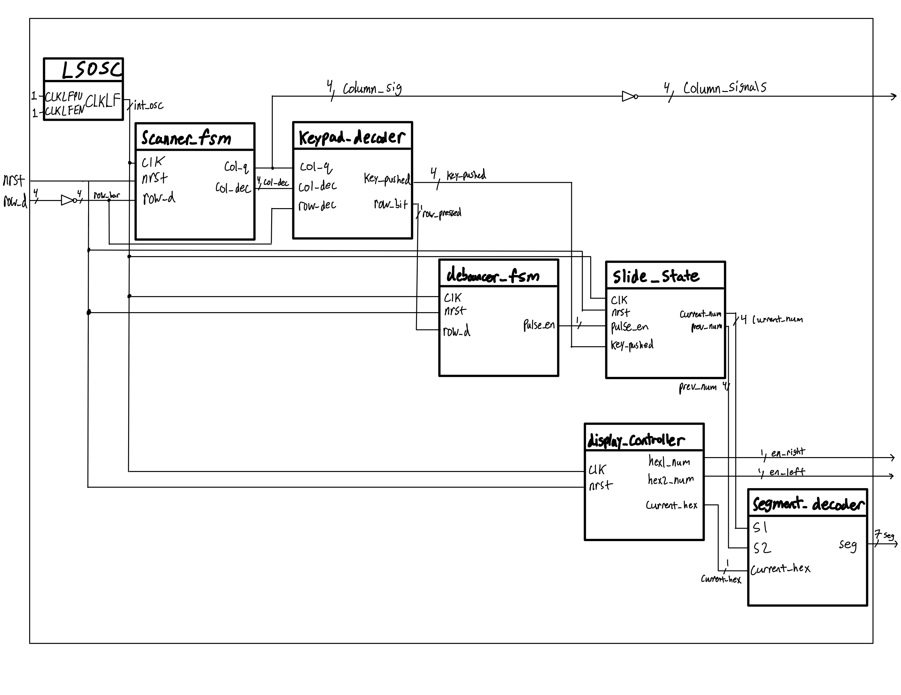

Summary
The third digital design lab in microPs involved implementing a keypad scanner and displaying the most recently pressed key on the right side of a dual 7-segment display, with the previously pressed key shown on the left. The objective of this lab was to expose students to a complex digital system that integrates both sequential and combinational logic. A secondary goal was to develop debugging skills by using an oscilloscope to diagnose timing-related issues.
To complete the assignment, I designed a scanner FSM that cycles through keypad columns, detects pressed keys via the row lines, and decodes the corresponding value. While conceptually simple, the design presented multiple challenges that required extensive debugging and verification.
Key Achievements
- Implemented a column-driven keypad scanner: only one column is driven LOW at a time, while the others remain HIGH. When a key is pressed, the active column is shorted through the switch to its corresponding row, allowing the FPGA to detect the key press.
- Designed a robust debouncer FSM to eliminate switch bounce and ensure only one valid press is registered per actuation.
- Resolved the multi-key press issue: pressing two keys in the same column does not lock up the system or cause invalid states.
- Fixed logic-level problems by moving from an initial pull-down design (which failed to meet VIH levels) to a pull-up configuration compatible with FPGA thresholds.
- Debugged active-LOW vs. active-HIGH polarity errors, which caused frozen display states until corrected.
- Achieved seamless integration with the time-multiplexed 7-segment display system from Lab 2, reusing prior work efficiently.
- Verified correctness with testbenches and waveform analysis, validating each FSM, the decoder, and the overall system.
Design
How the Keypad Works
A 4×4 matrix keypad consists of rows and columns of switches. Each key connects a specific row to a column when pressed. In this design:
- The FPGA drives the columns, holding all HIGH except one at a time, which is driven LOW.
- The rows are read as inputs with pull-up resistors.
- If a key in the active column is pressed, the LOW signal propagates through the switch, pulling the corresponding row input LOW.
- By combining the active column index and the detected row, the pressed key can be uniquely identified.
My Design

The system is organized into several interacting modules:
Scanner FSM: Drives column outputs and detects key presses. It toggles one column LOW at a time while others are held HIGH. If a key is pressed, the LOW propagates through the switch to a row input, overriding the weak pull-up and registering as a valid logic LOW. When a press is detected, all columns are driven LOW to avoid contention. The FSM also generates an encoded column signal for the decoder.

Keypad Decoder: Combines the row input with the encoded column signal to identify which key was pressed. If a valid combination is found, the decoder assigns the correct key value and asserts a
row_bitflag.Debouncer FSM: Receives the
row_bitsignal to verify a stable press. It enters a counting phase, and after sufficient cycles, generates a single-cycle enable pulse. This pulse prevents switch-bounce artifacts and accidental double counting.

Slide State Logic: Updates the display registers when the enable pulse arrives. The previous number is updated with the current value, and the current number is overwritten with the new key.
Time-Multiplexed Display: Reuses the 7-segment decoder from Lab 2. The current and previous numbers are alternately displayed at 60-cycle intervals, giving the illusion of simultaneous illumination.
Electrical Design Choices: I implemented a pull-up configuration on the row inputs. This required careful handling of logic thresholds—particularly ensuring that LOWs were registered correctly by the FPGA while HIGHs exceeded the required VIH level.

Debugging Challenges
This lab required ~50 hours of effort due to several design pitfalls:
Pull-down vs. Pull-up configuration: My initial pull-down design failed to satisfy FPGA VIH logic thresholds, causing the system to freeze at “00”. Simulation passed, but hardware consistently failed, requiring extensive probing to uncover.
Active-LOW vs. Active-HIGH confusion: At times I mistakenly drove incorrect values to the keypad columns. This also caused frozen displays until corrected.
Key bumping scenario: Releasing one key while holding another caused incorrect updates to the previous/current number registers. The root cause was the reset of the key flag upon release, which restarted the debouncer. Adding a conditional check in the FSM case default resolved this issue.
These challenges underscored the importance of carefully managing signal polarity, logic thresholds, and FSM edge cases in digital design.
Verification
I verified each subsystem with targeted testbenches and waveform inspection:
Scanner FSM: Correctly cycled through columns and entered press/release states.

Keypad Decoder: Produced valid key outputs when column/row combinations matched, and correctly held the
row_bithigh if a key remained pressed.

Debouncer FSM: Generated a clean one-cycle enable pulse after the threshold count, preventing double counts.

Slide State Logic: Correctly shifted current-to-previous and loaded the new key on each enable pulse.

System Simulation: Verified correct operation across all inputs. The scanner FSM (yellow), decoded key (purple), and current/previous numbers (cyan) matched expectations. All proficiency requirements were met.

Conclusion
This lab reinforced the challenges of implementing real-world digital systems where simulation may not expose all hardware pitfalls. I gained valuable experience debugging with oscilloscopes, reasoning about logic thresholds, and designing robust FSMs for noisy inputs. The final design met all requirements and provided a strong foundation for building more reliable FPGA systems.